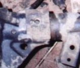
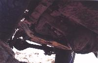
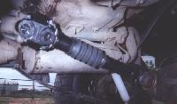

The benefits of swapping in axles for the Jeep YJ are definitely worth the effort. Although I did not do a spring over conversion at the time of my axle swap, incorporating one would be possible. If you are planning on an SOA set up in a YJ, swapping in larger axles is an excellent idea especially considering that most SOA Jeeps I've seen are running 35 inch tires. After seeing the size difference in components, as well as the "effectiveness" of C clip axles, I would make the removal of the Dana 35C a must in an SOA conversion.
Why swap to Dana 44s? The Dana 44s are significantly stronger than the stock YJ axles in all ways including shaft diameter, shaft spline count, ring and pinion size and axle housing size. Getting rid of the Dana 35C is one of the best things you can do to a Chrysler Jeep.
Another advantage of swapping in a Dana 44 up front is it gives you something no YJ saw from the factory, manual hubs. Not just any hubs though, beefy 1/2 ton truck hubs. The tie rod is out of the way on top of the knuckles. The six lug wheel bolt pattern is stronger than the five and they look cool too. The brakes will see a significant increase in size, front and rear.
The swap I did involved a Wagoneer/Cherokee (SJ) front end, and a Scout II rear end. The widths of both these axles are compatible and very similar to the dimensions of the stock YJ axles. There are 2 widths available in the SJs, the narrow track version is closer to the right width. The narrow track Wagoneer and Cherokee Jeeps lacked extensions on the fenders. You will find both right, and left hand drop differentials on these axles. The stock YJ has the diff on the driver's side. If you are keeping your original transfer case, a compatible front end must be found.
When I performed my swap I opted to install the venerable Atlas II transfer case. If one wishes to incorporate a D300 transfer case into the swap, and get rid of the NP231, now is decision time. The CJs had diffs on the passenger side. Benefits include: longer drive shaft, GEARED Tcase, and IMO a better unit than the 231. As mentioned I did not install the D300. If you are interested in swapping in a Dana 300, check out Larry Soo's axle and transfer case conversion article.
It wasn't until 1974 when Cherokees and Wagoneers started using the open knuckle Dana 44 that makes good swap material. Open knuckle axles allow a vehicle to have a better turning radius. The Wagoneers had disk brakes standard, but they were optional on the Cherokees until 1976.
The pinion on the D35C axle is not perfectly centered, it is off set just a bit to the passenger side. Because the use of a CV type drive shaft is just about guaranteed on any lifted YJ, this pinion offset must be copied on the donor axle. The Scout D44 width is close enough to that of the YJ, and has the same pinion offset. In addition the axle is built in a way allowing both the left and right side rear axle shafts to be identical - bonus!
The decision for matching up the wheel pattern on the two axles had two possible solutions: make the front match the rear, or make the rear match the front. On the swap I performed I had the rear lug pattern re-drilled to match the front.
I sent the shafts to Mosier where they charged $50/pair to weld/redrill the axle shafts. I guess the round trip cost me another $25 in shipping. It was quick and painless. I used Scout brake parts and Drums from a Cherokee. The part number is the same from 78 to 82 for the rear drums. I used finless drums. The inside inner edge on the new drums are raised quite a bit, and contacts the metal edge of the brake shoes. When you have your drums turned, turn the bit into this lip a bit.
 The spring perches on the SJ axle are 1 inch farther apart than the spring perches on the YJ. This means each spring perch needs to come 1/2 inch inboard. The drivers side is the tricker side sine the spring perch is integrated into the diff housing. Grind into the differential housing webbing 1/2 inch as shown in the blurry picture to the right. Fill in the gap with some steel and fill the king pin hole with weld. Grind the welds smooth and redrill the king pin hole 1/2" in from the original location.
Make sure you use rod for cast material when you weld the perch widening pieces. You also will need to grind at each spring perch to clear the Ubolts, and drill a hole trough differential webbing on the inside U-bolt for the U-bolt to go through. You will need to get larger U-bolts for the drivers side because the U-bolts run over the cast iron section use SJ U-bolts or have your local spring shop make you some. The SJ U-bolt plates can be used for the swap since the U-bolt size is different from the Dana 30 U-bolts, but the spring width is the same.
The SJ U-bolt plates are handy because they have the sway bar pins on them, and your sway bar will match up perfectly when you use these. The original SJ shock mounts brackets on the D44 work with the Wrangler shocks.
The stock YJ pitman arm is retained. The steering linkage will match up fine if you have the pitman arm machined (conical hole) to fit the SJ drag link. Because the tie rod is on top of the knuckles on the D44, a drop pitman arm is not used and the tie rod is more up out of the way.
 Since I had a shackle reversal, I had a custom front drive shaft with extra up-travel built. Another guy, Kerry, who did this swap without doing the shackle reversal said that the front driveshaft from a 2.5L AX5 YJ is the perfect length - it's about an inch shorter than the 4.0L AX15 driveshaft. Depending on your suspension you may not need drive shaft modifications.
I used all the brakes hardware from the SJ the axle, but the lines on my YJ were not compatible. Stainless lines for a CJ worked had the right ends though and the bolted right in place of my old YJ brake hose. It took longer to throw new pads then to replace the lines. The YJ master cylinder works well enough, but it has more travele and they are harder to bleed. I'm running my stock master cylinder until I can find a bolt-in replacement with a larger bore.
The rear axle is simple, remove the old spring perches and weld the new ones on. I obtained some inexpensive Confer perches from my local 4x4 shop. One can also use adjustable perches, but these are cheaper. With the Jeep raised, I installed the axle sitting loosely on the spring perches and loosely bolted to the springs. I made sure the axle was centered by measuring from the axle end to the outside edge of the spring. When the numbers matched, I set the pinion angle and welded it up. If you are using a CV style drive shaft, point the pinion just below the center of the output on the transfercase. One can use special tools, but My eyeball job worked well. I haven't had any drive line vibration and you could use shims to fine-tune it if there is a problem.
I removed the original shock mounts from the Dana 35c axle and welded them onto the D44 tubes. This works well or I could have bought some generic shock mounts and welded them on.
I will be flipping my rear U-bolts using Toyota Spring plates and square U-bolts. For now, I used the Scout U-bolt plates and Scout size U-bolts.
I used the YJ hard lines and brake hose on the Scout II axle. The side which the hard-line drops from the frame rail to the axle is opposite from the Scout, so a hole was drilled and tapped on the correct side of the axle tube. The YJ hard-line on the D44 axle threaded into the wheel cylinders. The Dana 35c emergency brake cables were used.
 Since I installed an Atlas transfercase at the same time, I had a rear CV type driveshaft custom made. If you were to keep the NP231 transfer case, it all depends on what year YJ you have. Some Wranglers use the same size U-joint as the Scout and some use a different size. I'm unsure when the change occured.
I have a 4 inch Rubicon Express lift with the UpWarrior shackle reversal. I have no wander, bump steer, or tire wear that I have noticed. I left out the trac bar and have had no problems. Other things need to be considered when making the swap such as gearing, wheels, oil, and all the other odds and ends.
Please keep in mind that the opinions expressed are my own. I also would like to warn the reader that an axle swap is not as easy a bolting on nerf bars. This task requires fabrication and welding skills, a good eye, time and money. What else you incorporate into the swap also affects all these factors. I am simply providing information regarding my experiences while swapping the axles.
{kind=link}
{kind=link}